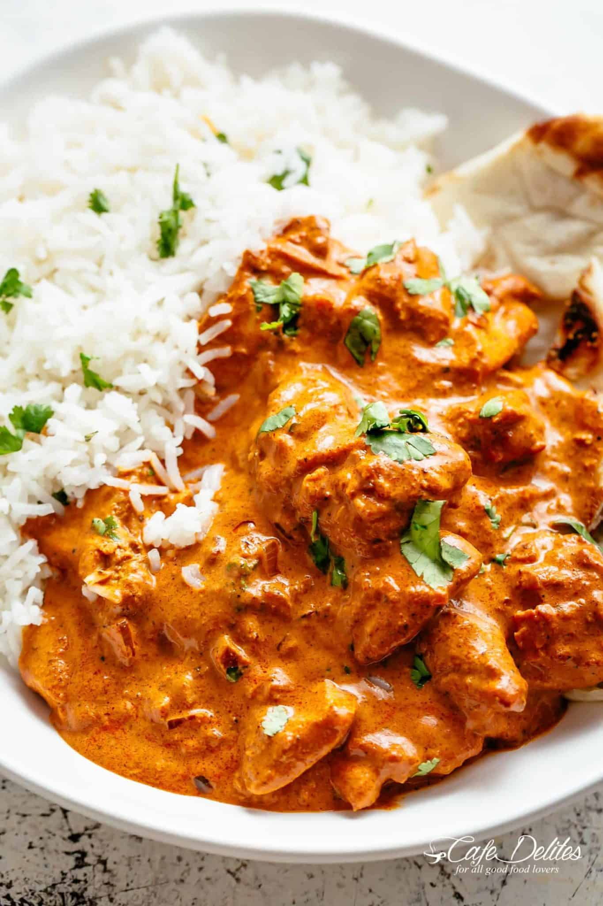

Chicken Tikka Masala

Description
This rich and creamy flavoursome Chicken tikka rivals any Indian restaurant! Why go out when you can make it better at home! With aromatic golden chicken pieces swimming in an incredible curry sauce, this Chicken Tikka Masala recipe is one of the best you will try!
The best sides for this dish is fresh Basmati rice and garlic naan bread!
Ingredients
For The Chicken Marinade:
- 28 oz chicken thighs or breasts cut into bite size pieces
- 1 cup plain yogurt
- 1 1/2 tablespoons minced garlic
- 1 tablespoon ginger
- 2 teaspoons garam masala
- 1 teaspoon tumeric
- 1 teaspoon ground cumin
- 1 teaspoon Kashmiri chili (or 1/2 teaspoon ground red chili powder
- 1 teaspoon salt
For the sauce:
- 2 tablespoons vegetable or canola oil
- 2 tablespoons butter
- 2 small onions finely diced
- 1 1/2 tablespoons garlic finely grated
- 1 tablespoon ginger finely grated
- 1 1/2 teaspoons garam masala
- 1 1/2 teaspoons ground cumin
- 1 teaspoon tumeric powder
- 1 teaspoon ground coriander
- 14 oz tomato puree (tomato sauce)
- 1 teaspoon Kashmiri chili (optional for color and flavor)
- 1 teaspoon ground red chili powder (adjust to taste)
- 1 teaspoon salt
- 1 1/4 cips heavy cream
- 1 teaspoon brown sugar
- 1/4 water if needed
- 4 tablespoons fresh cilantro to garnish
Instructions
- In a bowl, combine chicken with all of the ingredients for the chicken marinade; let marinate for 10 minutes to an hour (or overnight if time allows)
- Heat oil in a large skillet or pot over medium-high heat. When sizzling, add chicken pieces in small batches or 2 or 3, making sure not to crowd the pan. Fry until browned for only 3 minutes on each side. Set aside and keep warm. (You will finish cooking the chicken in the sauce.)
- Melt the butter in the same pan. Fry the onions until soft (about 3 minutes) while scraping up any browned bits stuck on the bottom of the pan.
- Add garlic and ginger and sauté for 1 minute until fragrant, then add garam masala, cumin, turmeric and coriander. Fry for about 20 seconds until fragrant, while stirring occasionally.
- Pour in the tomato puree, chili powders and salt. Let simmer for about 10-15 minutes, stirring occasionally until sauce thickens and becomes a deep brown red colour.
- Stir the cream and sugar through the sauce. Add the chicken and its juices back into the pan and cook for an additional 8-10 minutes until chicken is cooked through and the sauce is thick and bubbling. Pour in the water to thin out the sauce, if needed.
- Garnish with cilantro and serve with rice and Naan bread!
Tips:
- Leave out brown sugar for a less sweet finish.
- Use slightly less tomato sauce and a little more cream for a less sweet and lighter colored finish.
- Use a little more garam masala, cumin, tumeric, coriander, chili powder, and salt for a more savory instead of sweet finish.
Back Home